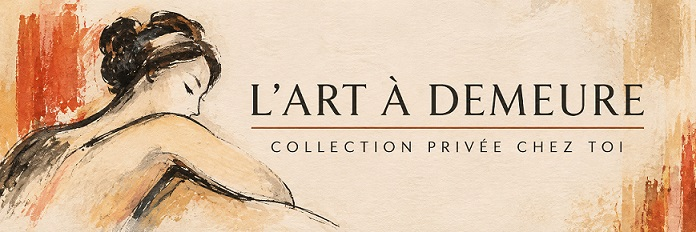

Grand Bouquet de fleurs
Vers 1950
Huile sur toile
Œuvre attribuée à Roger Crusat

ROGER CRUSAT · 1955
Femme aux yeux fermés est une œuvre réalisée par Roger Crusat en 1955, au pastel sur papier. Elle témoigne d’un moment de son parcours artistique. Sa présentation iconographique sera enrichie à partir de l’observation de l’œuvre originale.

Roger Crusat (1917–1994) est un peintre, lithographe et poète français d’identité catalane. Né à Perpignan, il a développé une grande partie de son parcours artistique à Paris, notamment dans le quartier de Montmartre, où il a fréquenté la cité d’artistes des Fusains. Surnommé « le peintre catalan de Montmartre », il a construit une œuvre personnelle, nourrie par son attachement à la culture catalane et par la vie artistique parisienne.
Roger Crusat se forme d’abord auprès d’André Fons-Godail à l’École des beaux-arts de Perpignan. Après sa mobilisation pendant la Seconde Guerre mondiale, il poursuit ses études à Paris auprès de René Jaudon, à l’École nationale supérieure des beaux-arts. Dans sa jeunesse, il participe également à une compagnie de ballet, pour laquelle il réalise des costumes et des décors, tout en pratiquant la danse.
Installé à Montmartre, notamment dans la cité d’artistes des Fusains, il prend part à la vie artistique parisienne. Il devient sociétaire du Salon des Indépendants, du Salon d’Automne et de la Société nationale des beaux-arts. Son parcours comprend des expositions à Paris et en région, ainsi que des présentations à l’étranger, notamment à Genève et Bruxelles, et dans des expositions collectives en Belgique, au Japon et au Mexique.
Son parcours témoigne de sa participation active à la scène artistique française du XXe siècle.
Vers 1950
Huile sur toile
Œuvre attribuée à Roger Crusat

Huile sur toile
130,81 × 97,79 cm
Œuvre attribuée à Roger Crusat

Huile sur toile
Œuvre originale signée de Roger Crusat (1917–1994)